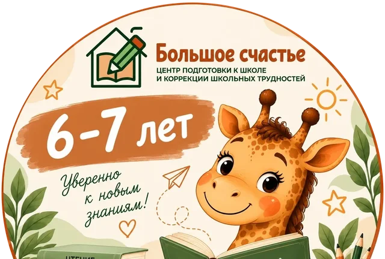
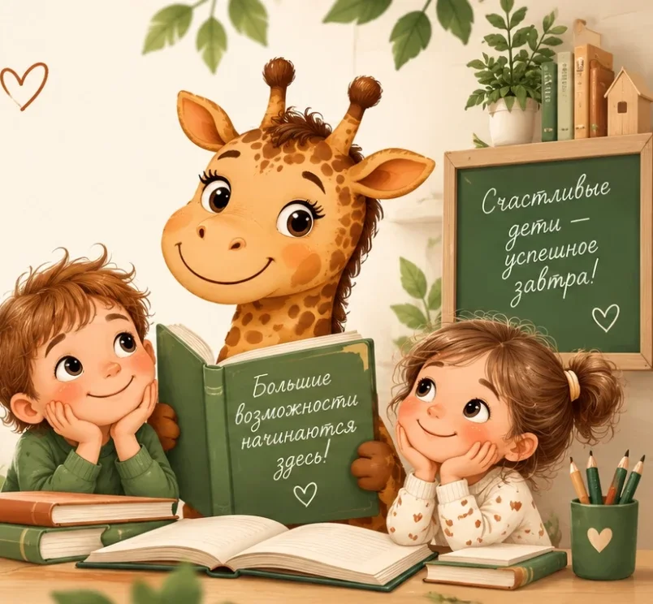
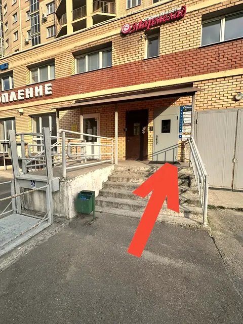

Группа до 5 детей · 6–7 лет
Нейроподготовка к школе
Подготовка к школе в нейроподходе: чтение, математика, окружающий мир, подготовка руки к письму.
- 8 занятий
- по 60 минут
- 2 раза в неделю
8 000 ₽курс · 8 занятий

Центр подготовки к школе и коррекции школьных трудностей · Казань
Готовим к школе в нейроподходе, исправляем почерк, помогаем с чтением и усидчивостью. Начинаем с диагностики — и объясняем родителям, откуда берутся трудности.

С чем приходят родители
наведите или нажмите на записку →
Это не приговор и не «лень». Чаще всего у трудности есть понятная причина — её и ищем на диагностике.
Самопроверка для родителей
Отметьте, что из этого вы замечаете у ребёнка.
Иллюстрация. Работы учеников покажем с согласия родителей.
Коррекция почерка · 8 занятий
Тетрадь с закладками
Группа до 5 детей · 6–7 лет
Подготовка к школе в нейроподходе: чтение, математика, окружающий мир, подготовка руки к письму.
8 000 ₽курс · 8 занятий

Ищем причину трудности и объясняем, с чего начать
3 000 ₽90 минут
Час развивающих игр
700 ₽60 минут
Начать лучше с диагностики — так понятнее, какая группа нужна
фирменное направление
Группа до 4 детей · для школьников
Ставим руку и захват ручки, выравниваем буквы, снимаем усталость руки — чтобы ребёнок успевал писать в темпе класса.
8 200 ₽курс · 8 занятий
Чтение, письмо, нейрогимнастика, развитие речи и памяти
1 900 ₽45 минут
Развитие речи
стоимостьуточняйте
Почему устаёт рука, откуда ошибки и медленное чтение
3 000 ₽90 минут
Час развивающих игр
700 ₽60 минут
Оплата частями·СБП и QR·подарочные сертификаты
Путь ребёнка
Смотрим, откуда берётся трудность, и объясняем всё «по полочкам».
Подбираем формат: группа или индивидуальные занятия.
Небольшие группы, внимание каждому, нейрогимнастика.
Обратная связь после каждого занятия, задания — в общем чате.
Звёздочки и подарки за успехи — и ребёнок «бежит» на занятия.
Педагог
Педагог центра, ведёт нейроподготовку и коррекцию почерка.
Родители в отзывах чаще всего пишут именно о ней — вот несколько строк, которые мы прикололи на доску:
«Контакт с ребёнком с первого взгляда»
«Дочь не ходит, а бежит к ней на нейрозанятия»
«Нашла индивидуальный подход» — о гиперактивном ребёнке
«Всё по полочкам рассказала: что, как и с чего начать»
В центре также принимает логопед.
Альбом на столе
карточки можно двигать и открывать
Тетради родителей
Короткие выдержки из отзывов. Листайте стопку — свайпом, мышкой или стрелками.
почерк
Почерк стал аккуратнее и увереннее, перестала уставать рука — и ребёнок стал заметно быстрее писать.
Лейсан А.
подготовка
«Всё в игровой форме и очень мягко дочка научилась читать и считать».
Таня М.
чтение
«Сын стал читать самостоятельно! Без напоминаний и „прессинга“».
Наталья П.
диагностика
На диагностике выяснили, что неправильно поставлена рука. За 2 месяца выросла скорость чтения.
Алина С.
почерк
«Ребёнок у нас либо будущий врач, либо надо что-то с этим делать» — после курса почерк исправился.
Мирца К.
подготовка
Сын был неусидчивым — быстро научился читать, считать и писать. А ещё педагог поощряет детей подарками.
Эльмира
почерк
Ребёнок не писал на уроках — улучшения появились после 5 занятий, а ещё появился интерес к чтению.
Валерия К.
почерк
Третий класс — и за полтора месяца научилась правильно держать ручку.
Мария К.
обратная связь
После каждого занятия лично всё объясняют, а задания пишут в общий чат.
Гульназ Г.
«Это действительно Большое Счастье, когда у учителя нет претензий к тетрадям»
Помогаем детям учиться с удовольствием!
Вопросы родителей
не нашли ответ — напишите, ответим в WhatsApp или Telegram
Группа подготовки к школе — для детей 6–7 лет. Коррекция почерка и индивидуальные занятия — для школьников.
Нейропедагогическая диагностика длится 90 минут. За это время мы ищем причину трудности — и объясняем родителям, откуда она берётся и с чего начать.
Групповые курсы — по 8 занятий, 2 раза в неделю по 60 минут. В группе подготовки к школе — до 5 детей, в группе коррекции почерка — до 4. Индивидуальное занятие длится 45 минут.
После каждого занятия педагог рассказывает, как всё прошло и на что обратить внимание. Задания приходят в общий чат.
Да, есть рассрочка. Оплатить можно по СБП и QR-коду, картой, наличными, безналичным переводом или онлайн.
Да. Напишите нам — подскажем, как его оформить.
ЖК «Солнечный город», ул. Баки Урманче, 7, первый этаж. Ищите серую дверь, домофон — 4. От остановки «Улица Баки Урманче» около 2 минут пешком.
Как нас найти · Казань
ЖК «Солнечный город», 1 этаж · Работаем по предварительной записи
Остановка «Улица Баки Урманче» — 2 минуты пешком
